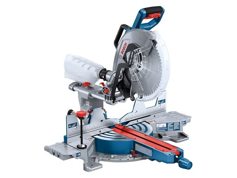

Bosch PROFACTOR 18V 12″ Dual-Bevel Slide Miter Saw (GCM18V-12SDN, tool only)
The biggest Bosch power-tool markdown we found on Amazon this morning: the cordless 12″ PROFACTOR slide miter saw is $329, against a $715 list price, shipped and sold by Amazon as a Black Friday deal. It cuts 3-1/2″ deep and crosscuts boards up to 14″ wide. It bevels both directions, so you don’t have to flip long stock for compound cuts, and the bevel scale has detents at the common angles. A shadow-style LED lights the cut line with nothing to calibrate, and the BITURBO brushless motor is built to run on Bosch’s CORE18V high-output packs. That matters for a small shop: no cord to trip over, and you can carry it to the lumber instead of the other way around. Know what you’re buying, though. It’s the bare tool, so you’ll need Bosch 18V batteries (CORE18V high-output recommended) and a charger. If you aren’t on Bosch 18V yet, add that cost before comparing it to Wednesday’s $449 corded DEWALT DWS780. Bosch’s T4B stand is also on sale below.
SHOP PRICE: $329
LIST: $715